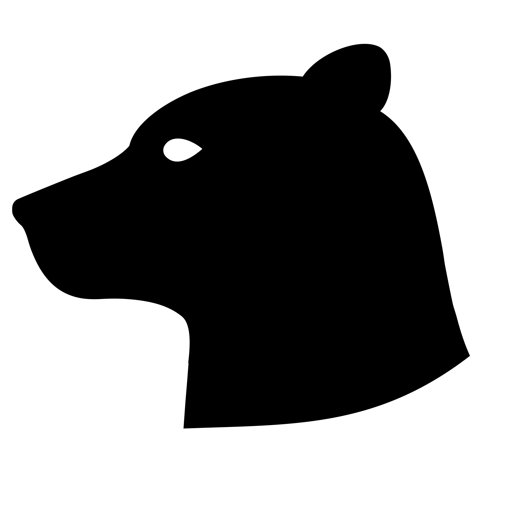
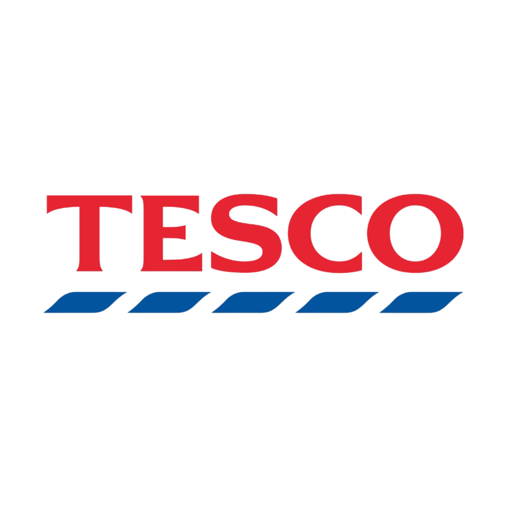

OBFORD.
IT infrastructure & operations
Engineer.
Contractor.
Obford Ltd is the privately held company of Oliver Beresford - an IT engineer currently engaged as Associate IT Infrastructure Engineer at Playground Games.
Day-to-day work spans endpoint management, infrastructure operations, internal tooling, and the full range of IT that keeps a large creative studio running. The focus is always on systems that are reliable, maintainable, and built to last.
Across gaming,
energy & enterprise.
Experience across gaming, energy, and enterprise IT environments.
Companies I've worked with

Endpoint management, deployment pipelines, patch cycles, and cloud operations.
Day-to-day support, provisioning, asset management, and onboarding.
Internal apps, tools, and scripts that reduce manual overhead and improve reliability.
Practical security posture and change management for stable, resilient systems.
Currently
employed.
Full-time at Playground Games via Obford Ltd.
Available for conversation via LinkedIn.
UK-based · Remote or on-site